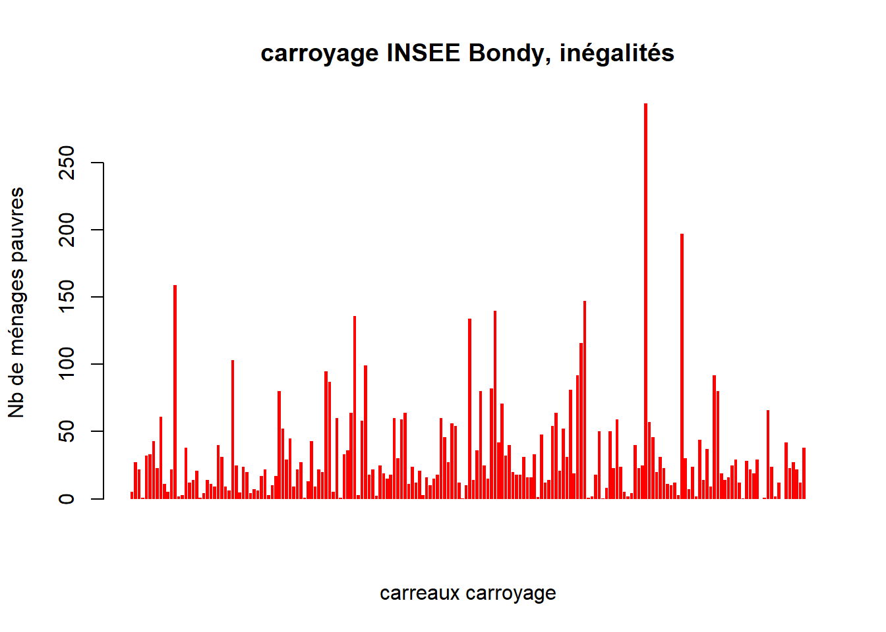
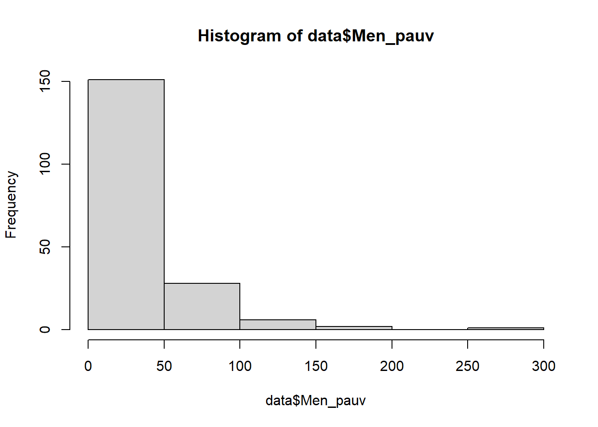
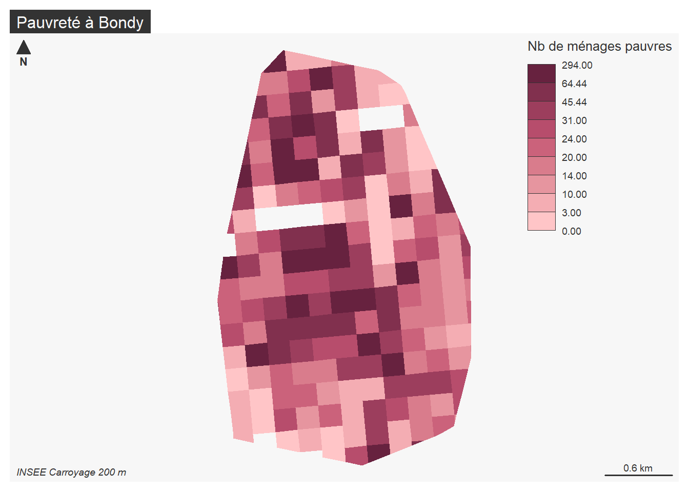
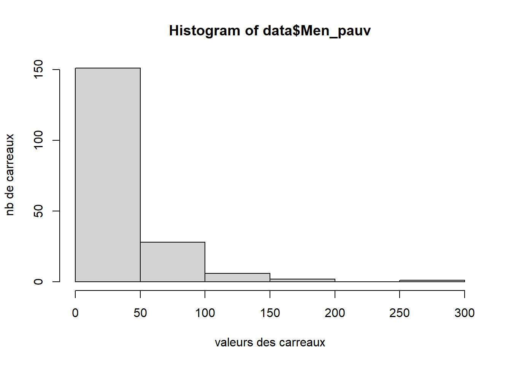
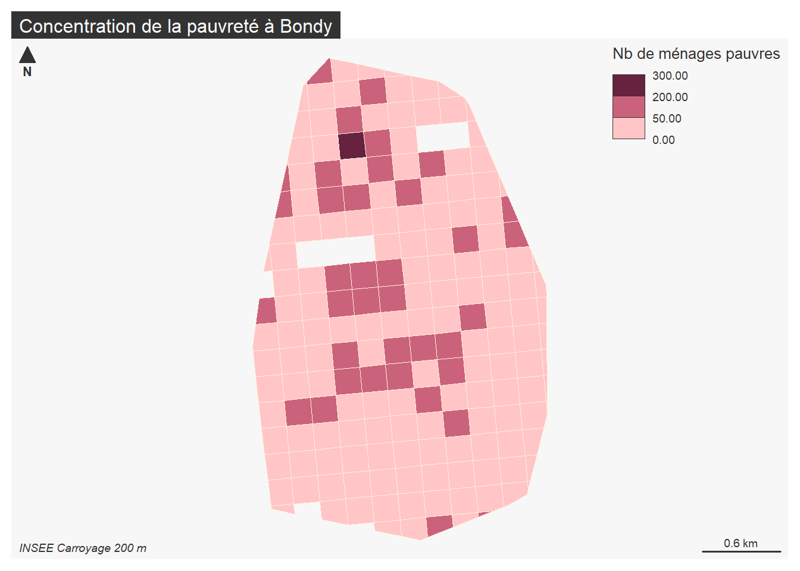

Intersection spatiale et exploration statistique du carroyage INSEE 200 m
Les données INSEE sont très lourdes (223 M°) Dans le cadre de l’examen sont mises à disposition les données concernant uniquement l’Ile de France.
sources :
On filtre donc sur l’Ile de France afin d’avoir un fichier un peu moins gros.
insee <- st_read("data/Filosofi2015_carreaux_200m_metropole.gpkg")
idf <- st_read("data/regions-20180101-shp/regions-20180101.shp")
# Transformation de la projection de idf (les données osm sont toujours en 4326, projection mondiale)
idf <- st_transform(idf, 2154)
# On filtre sur le code insee de l'île de france (11), les autres régions ne nous intéressent pas.
idf <- idf [idf$code_insee == 11,]
# Intersection spatiale
idfInsee <- st_intersection(insee, idf)
st_write(idfInsee,"data/insee.gpkg","idf", delete_layer = T)Pour créer un fichier .csv, à partir d’un fichier de formes, il faut faire “tomber” la colonne géométrique (commande drop)
idfcsv <- idfInsee [,c(1:42), drop = T]
write.csv(idfcsv, "data/idfInsee.csv", fileEncoding = "UTF-8")Les étudiants ont déposé leur script sur leur git. La récupération est possible de manière automatisé.
ref <- read.csv("data/cours6.csv", fileEncoding = "UTF-8")
ref <- ref [ref$lien.évaluation != "", c(1,4,5)]
length(ref$lien.évaluation)## [1] 14# 14 étudiants ont rendu un script...
ok <- grep(".Rmd", ref$lien.évaluation)
# ... dont 7 seulement un Rmd
ref$lien.évaluation [-ok]## [1] "https://github.com/Beatdvtbea/DST.git"
## [2] "https://github.com/Sanaa-totoro/TOTORO-"
## [3] "https://github.com/chloedesoyres/toto"
## [4] "https://github.com/Ian833/L6ECSIG/blob/68edcb2f27fabf685099c30d0fdf3995768cd5de/Exam.Rproj"
## [5] "https://github.com/glcgvnn123/EXAMEN/blob/main/DST%2010%20MARS.R"
## [6] "https://github.com/Galliza/galli"
## [7] "https://github.com/ImanZourdani/L6ECSIG/blob/main/Iman.Rproj"# ...les 7 autres ont parfois rendu uniqumement le répertoire où est le script.
# d'où correction
ref$lien.ok## [1] "https://github.com/Beatdvtbea/DST/blob/main/DST.Rmd"
## [2] "https://github.com/annesimon94/pourlebon/blob/main/examrmd.Rmd"
## [3] "https://github.com/MariamOuatt/monrepository/blob/main/DST%20OUATTARA/Carroyage-Bondy.Rmd"
## [4] "https://github.com/selinhacer/L6ECSIG/blob/40e43c2efdc7fdc7e9959e5b93ef965c69096785/Selin.Rmd"
## [5] "https://github.com/Sanaa-totoro/TOTORO-/blob/main/Exam.SanaaROUX.Rmd"
## [6] "https://github.com/chloedesoyres/toto/blob/main/bondy.Rmd"
## [7] "https://github.com/Ian833/L6ECSIG/blob/68edcb2f27fabf685099c30d0fdf3995768cd5de/exam.html"
## [8] "https://github.com/AnnaMauclet/SIG1/blob/main/Evaluation.Rmd"
## [9] "https://github.com/Marion67620/SIG_v2/blob/gh-pages/Evaluation_10-03_BLONDEAU.Rmd"
## [10] "https://github.com/glcgvnn123/EXAMEN/blob/main/DST%2010%20MARS.R"
## [11] "https://github.com/leechangbeom/L6ECSIG/blob/64ed85217daeeb04688065fa6ace676c73634948/examen(Chang-beom).Rmd"
## [12] "https://github.com/Zacharyabdi/SIG/blob/1a582a6c616822ff4592577dc35f81d688562b78/ABDIzacharycontrole.Rmd"
## [13] "https://github.com/Galliza/galli/blob/main/Galli1.Rmd"
## [14] ""# Le 14e étudiant n'a pas de dépôt public, demande d'envoi par mail.fin <- length(ref$lien.ok)-1
chemin <- "DST/"
for (i in 1:fin){
download.file(ref$lien.ok [i], paste0(chemin,ref$Prénom [i], ".Rmd"))
}En fait, les fichiers récupérés ne correspondent pas au .Rmd. La récupération manuelle s’impose….
Afin de faire l’intersection spatiale, on crée une enveloppe autour des bureaux de vote.
library(sf)
data <- st_read("data/vote.gpkg", "zone")## Reading layer `zone' from data source
## `C:\Users\tachasa\Documents\sauveGIT\03_coursDashboard\data\vote.gpkg'
## using driver `GPKG'
## Simple feature collection with 32 features and 5 fields
## Geometry type: MULTIPOLYGON
## Dimension: XY
## Bounding box: xmin: 661088.1 ymin: 6865338 xmax: 663354.7 ymax: 6869043
## Projected CRS: RGF93 / Lambert-93plot(data$geom, main = "Bureaux de vote")
limite <- st_convex_hull(st_union(data$geom))
class(limite)## [1] "sfc_POLYGON" "sfc"# l'objet limite n'est pas un dataframe, juste un polygone
limite <- st_as_sf(limite)
plot(limite, add = TRUE, col= NA, border = "red")
idfInsee <- st_read("data/insee.gpkg", "idf")## Reading layer `idf' from data source
## `C:\Users\tachasa\Documents\sauveGIT\03_coursDashboard\data\insee.gpkg'
## using driver `GPKG'
## Simple feature collection with 73214 features and 42 fields
## Geometry type: MULTIPOLYGON
## Dimension: XY
## Bounding box: xmin: 586673.7 ymin: 6780073 xmax: 738408.8 ymax: 6905080
## Projected CRS: RGF93 / Lambert-93bondyInsee <- st_intersection (idfInsee, limite)
st_write(bondyInsee, "data/insee.gpkg", "bondy", delete_layer = T)## Deleting layer `bondy' using driver `GPKG'
## Writing layer `bondy' to data source `data/insee.gpkg' using driver `GPKG'
## Writing 188 features with 42 fields and geometry type Polygon.On choisir la variable Men_pauv qui représente le nombre de ménages pauvres.
data <- read.csv("data/bondyInsee.csv", fileEncoding = "UTF-8")
names(data)## [1] "X" "IdINSPIRE" "Id_carr1km" "I_est_cr" "Id_carr_n"
## [6] "Groupe" "Depcom" "I_pauv" "Id_car2010" "Ind"
## [11] "Men" "Men_pauv" "Men_1ind" "Men_5ind" "Men_prop"
## [16] "Men_fmp" "Ind_snv" "Men_surf" "Men_coll" "Men_mais"
## [21] "Log_av45" "Log_45_70" "Log_70_90" "Log_ap90" "Log_inc"
## [26] "Log_soc" "Ind_0_3" "Ind_4_5" "Ind_6_10" "Ind_11_17"
## [31] "Ind_18_24" "Ind_25_39" "Ind_40_54" "Ind_55_64" "Ind_65_79"
## [36] "Ind_80p" "Ind_inc" "I_est_1km" "code_insee" "nom"
## [41] "nuts2" "wikipedia" "surf_km2"barplot(data$Men_pauv, main = "carroyage INSEE Bondy, inégalités", xlab = "carreaux carroyage" ,
ylab = "Nb de ménages pauvres", col = "red", border = NA)
Le graphique montrer qu’il existe de grandes inégalités à Bondy. Quelques carreaux ont plus de 200 ménages pauvres, mais l’énorme majorité est en dessous de 50.
Il est évident qu’il vaut mieux cartographier…
library(mapsf)
data <- st_read("data/vote.gpkg", "inseeBondy")## Reading layer `inseeBondy' from data source
## `C:\Users\tachasa\Documents\sauveGIT\03_coursDashboard\data\vote.gpkg'
## using driver `GPKG'
## Simple feature collection with 188 features and 42 fields
## Geometry type: POLYGON
## Dimension: XY
## Bounding box: xmin: 661088.1 ymin: 6865338 xmax: 663354.7 ymax: 6869043
## Projected CRS: RGF93 / Lambert-93mf_map(data, type = "choro", pal = "Burg",
border = NA, var = "Men_pauv", leg_title = "Nb de ménages pauvres")
mf_layout(title = "Pauvreté à Bondy", credits = "INSEE Carroyage 200 m") 
En fait l’exploration statistique passe par un histogramme qui permet de définir les seuils que l’on va cartographier.
hist(data$Men_pauv, xlab = "valeurs des carreaux", ylab = "nb de carreaux")
# Définition de 3 paliers
paliers <- c(0,50,200,300)
mf_map(data, type ="choro", var = "Men_pauv", breaks = paliers, paliers, pal = "Burg", border = "antiquewhite1", leg_title = "Nb de ménages pauvres")
mf_layout(title = "Concentration de la pauvreté à Bondy", credits = "INSEE Carroyage 200 m")
L6ECSIG Construction et utilisation des SIG